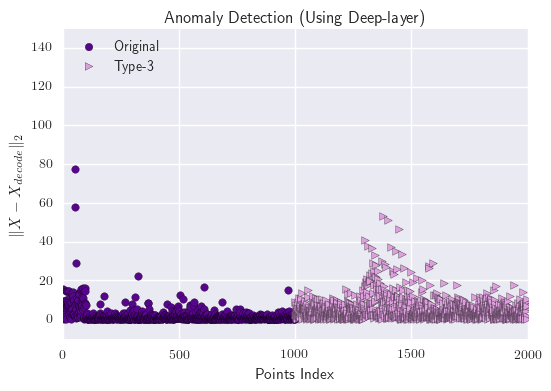
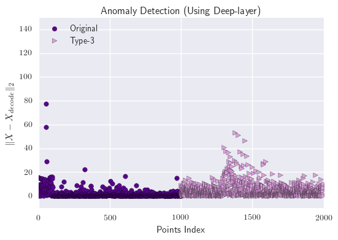

Project
 

Efficient auto-encoder for physics particle collision event
Use collision event data from CERN to produce an auto-encoder to compress data. The data is 3-D tensor while the index represent the location of the energy detector and the value represent the energy. The challenge is that this noisy data has 14400 dimension and we need to preserve the most relevant part and thus reduce the noise. The compress ratio is 32:14400.
Compare three compressors: Multilayer perceptron auto-encoder, convolutional auto-encoder and PCA. We evaluate them by two ways. One is calculating the reconstruction error and the other is apply reconstructed data in real application to see its performance.
Add threshold RELU on the last layer to make the output sparse. We find that multilayer perceptron is the best auto-encoder because it has over 0.95 AUC score between the reconstruction data and the original data. Also unlike PCA, it does not focus on the biggest value but indeed extract the hidden factor via our training process.
We use this technique to do anomaly detection. We compare the mean square error between the normal one and the abnormal one. And we find that multilayer perceptron performs best in this case.
This work is part of Kyle Cranmer work, which is presented in NIPS 2016.
Duplication Detection
Use the data from health care system to predict possible duplication of information. The challenge is that the whole pair set is around 10^11, which is time consuming if we build the model on it. And it is also not a balanced dataset because in ground truth we only have around 120,000 pairs.
Construct an efficient parallel method to get a smaller set of interesting pairs, which we think that they are duplication. The processing time is 10 minutes using 8 workers on CPU. After this process, we reduce the pair set from 10^11 to 3700k. Then we generate a balanced training set by randomly select same number negative pairs (pairs that are not duplication) as the positive pairs (pairs that are duplication). Then we use a feature extractor to generate feature vector for each pair. Finally use random forest to make the prediction.
The smaller set of interesting pairs includes over 95% ground truth. And we finally get 99.4% accuracy with our fine tunning classifier.
Yelp Restaurant Rating Prediction
Use the data from Yelp Dateset Challenge to fit different models. The challenge of this dataset is that the business attribute of the restaurant is not enough for well prediction so that combining the review as the additional feature is necessary.
Create a new model by tagging words of each review as adjective then apply Google pre-trained word2vec model which can improve the accuracy by 50\%. Also evaluate the model by using AUC of the micro-ROC curve, which is equal to the probability that the confident score of true sample is higher than the score of false sample. For our model, the AUC/probability is 0.86.
Effective classification of STL-10
STL-10 is a famous image processing database for testing semi-supervised learning containing 4000 training data, 1000 validation data, 8000 testing data and 100000 unlabeled data for 10 different class. The challenge of this dataset is that the training dataset is not enough for training compared to testing data.
We find a good initial kernel for first four CNN layers by applying k-means clustering to unlabeled data, which makes our accuracy improved to 76%.
We generate extra training data by applying some augmentation technology such as scaling, translation for balancing the size of training data and testing data. We find that when we augment twice for each training data, it performs best and finally get 78% accuracy.
Neural Style Transfer
How to change the real-life photograph by adding some new feature? It is really an interesting problem. This paper use neural net to extract texture feature from style image and content feature from real-life photograph, then starting from a white noise image, they try to make the image has similar texture feature and content feature.
This personal project makes me know that every layer in deep neural network is meaningful. I implemented it by using tensorflow and create an end-to-end solution for it.

Explore Relationship Between Citi bike and weather
We use citi bike data and weather data in 2015 to find the relationship.
I create multiple MapReduce functions to filter or edit dimension of data. Besides only testing the relation between weather and usage, we also added the dimension such as age and gender in order to check if the results would vary for these groups.
We use data visualization technique to explore the correlation. We find that temperature has very high correlation and the usage of citi bike is various depending on time, traffic, gender and age groups.

Apply Streamline-Diffusion Method to Burgers Equation
Burgers' equation is a fundamental PDE in various area of applied mathematics. It performs very bad when it comes to advection-dominant condition.
I modified some part of Streamline-Diffusion Method to Burgers' equation which can improve the standard finited element method by half order.
I proved the stability property of this method and give the upper bound of the speed. Also I carried out some experiments to illustrate the advantage of this new method to Burgers' equation.
This is my undergraduate thesis project, advised by Professor Zhang Qiang.
Education
Master of Science in Data Science
2015 - 2017
New York University, Center for Data Science
Bachelor of Science in Computational Mathematics
2011 - 2015
Nanjing University